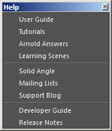
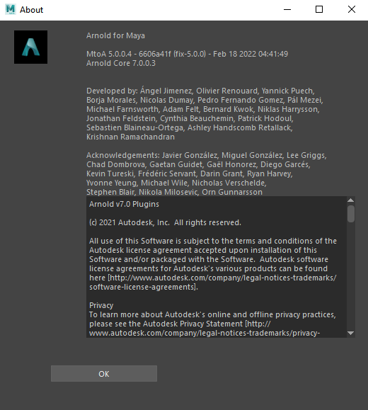

帮助菜单

_“Arnold > 帮助”(Arnold > Help)_菜单
“Arnold > 帮助”(Arnold > Help) 菜单中提供了有关 MtoA 的有用链接和信息：
- 用户手册(User Guide)：在浏览器中打开此 MtoA 手册。
- 教程(Tutorials)：在浏览器中打开教程页面。
- Arnold 社区(Arnold Community)：在浏览器中打开 Arnold 社区论坛网站。
- 学习场景(Learning Scenes)：在浏览器中打开学习场景页面。
- Arnold 渲染器网站(Arnold Renderer Website)：在浏览器中打开 Arnold 渲染器网页。
- 邮寄列表(Mailing Lists)：在浏览器中打开邮寄列表网页（需要登录）。
- 支持博客(Support Blog)：在浏览器中打开 Arnold 支持博客页面。
- 开发人员手册(Developer Guide)：在浏览器中打开支持站点的 Arnold 百科页面。
- 发行说明(Release Notes)：在浏览器中打开当前发行说明。
如何检查版本号
从“Arnold > 关于”(Arnold > About)菜单中打开“关于”(About)对话框。这时会显示一个对话框，其中包含致谢信息以及 MtoA 和 Arnold 核心的版本号。
